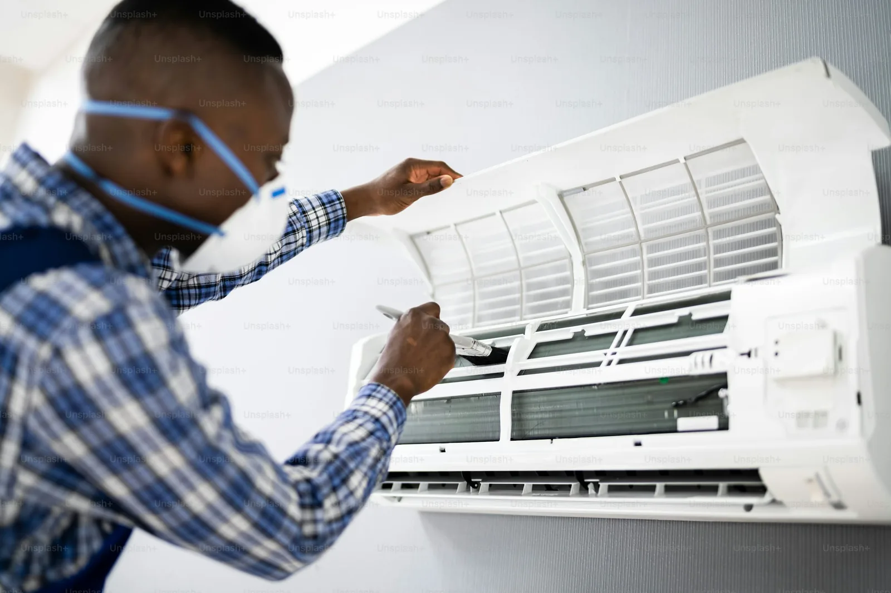

طريقة تنظيف فلتر المكيف المنزلي ومتى يجب تغييره
يحتجز الفلتر جزءًا من الغبار قبل مرور الهواء إلى الوحدة الداخلية. ومع تراكم الأوساخ تقل مساحة مرور الهواء، وقد يطول الوقت اللازم للوصول إلى درجة الراحة. العناية الدورية تساعد على الحفاظ على تدفق الهواء، لكنها لا تعني أن كل ضعف تبريد سببه الفلتر؛ فقد تكون هناك مشكلة أخرى في التصريف أو المروحة أو أجزاء التكييف تحتاج إلى فني.
تختلف الفلاتر باختلاف الشركة والطراز وطريقة الاستخدام. لذلك راجع دليل الجهاز لمعرفة موضع الفلتر وطريقة إخراجه، وما إذا كان قابلًا للغسل أو مصممًا للاستبدال. لا تعتمد على شكل فلتر جهاز آخر، ولا تستخدم منظفًا أو معقمًا غير موصى به من الشركة.

خطوات آمنة للتنظيف وإعادة التركيب
- أوقف المكيف وافصل الطاقة بالطريقة المحددة في دليل الجهاز، وانتظر توقف المروحة تمامًا.
- افتح الغطاء برفق من مواضعه المخصصة، واسحب الفلتر من أطرافه دون ثني الإطار أو شد الأسلاك المجاورة.
- إذا كان الفلتر قابلًا للغسل، أزل الغبار أولًا بلطف ثم اشطفه بماء فاتر وفق اتجاه التنظيف المبين في الدليل. لا تستخدم فرشاة خشنة أو ماءً ساخنًا أو مواد كيميائية قوية.
- اترك الفلتر يجف كاملًا في الظل وعلى سطح نظيف. لا تعيده وهو رطب، ولا تستخدم مجففًا ساخنًا قد يشوه الشبكة.
- أعده إلى مجراه الصحيح، وأغلق الغطاء، ثم أعد الطاقة وشغّل الجهاز. إذا لم يثبت بسهولة فلا تضغط عليه؛ تحقق من الاتجاه والمقاس.

متى يكفي التنظيف ومتى يكون الاستبدال أفضل؟
يكون التنظيف مناسبًا عندما يسمح دليل الجهاز بذلك وتكون الشبكة سليمة ويزول الغبار دون تلف. أما الفلتر الممزق أو المتشقق أو الملتوي، أو الذي لا يعود إلى وضعه بإحكام، فيحتاج عادة إلى قطعة بديلة مطابقة لموديل المكيف. التركيب غير المحكم قد يسمح بمرور الأوساخ إلى داخل الوحدة، كما أن الفلتر غير المطابق قد يعيق حركة الهواء.
لا توجد مدة واحدة تناسب كل المنازل؛ فعدد ساعات التشغيل، ووجود حيوانات أليفة، والغبار في المنطقة كلها عوامل تغيّر وتيرة الفحص. اجعل المراجعة عادة منتظمة، واتبع الفترة المحددة في دليل الشركة بدل الانتظار حتى يضعف تدفق الهواء.
علامات تستدعي فحصًا فنيًا
إذا بقي الهواء ضعيفًا بعد تركيب فلتر نظيف وجاف، أو ظهرت رائحة غير معتادة أو أصوات جديدة أو ماء قرب الوحدة، أوقف التجارب المتكررة واطلب فني تكييف. كذلك لا تحاول تنظيف ملفات التبريد الداخلية أو فك الغطاء الكهربائي بمواد منزلية؛ هذه الأجزاء تحتاج أدوات وإجراءات مناسبة.
هذه إرشادات توعوية عامة ولا تغني عن دليل الشركة المصنّعة أو تقييم الفني المختص. السلامة أولاً.
أسئلة شائعة
هل أغسل كل أنواع فلاتر المكيف؟
لا. بعض الفلاتر قابلة للغسل وبعضها مخصص للاستبدال؛ اتبع دليل موديل جهازك قبل استخدام الماء.
هل أشغّل المكيف والفلتر ما زال رطبًا؟
لا. اترك الفلتر يجف تمامًا وأعد تركيبه في اتجاهه الصحيح قبل تشغيل الجهاز.
ماذا أفعل إذا لم يتحسن تدفق الهواء بعد التنظيف؟
تحقق من تثبيت الفلتر ثم أوقف المحاولات واطلب فنيًا؛ فقد يكون السبب خارج الفلتر.
اتصل الآن للاستفسار عن الخدمة
تأكد من توفر الخدمة ونطاقها في مدينتك قبل تحديد الموعد.
ملاحظة عملية في السعودية
أفضل تجهيز لهذه الخدمة هو وصف المكان بدقة: عدد الغرف أو الأجهزة، وجود أطفال أو حيوانات، وأي خامة حساسة تحتاج اختبارًا موضعيًا.
ولطلب شركة تنظيف بصورة أوضح، اذكر مساحة المكان ودرجة الاستعجال وما جُرّب سابقًا، ثم راجع بنود الخدمة قبل اعتماد الموعد.